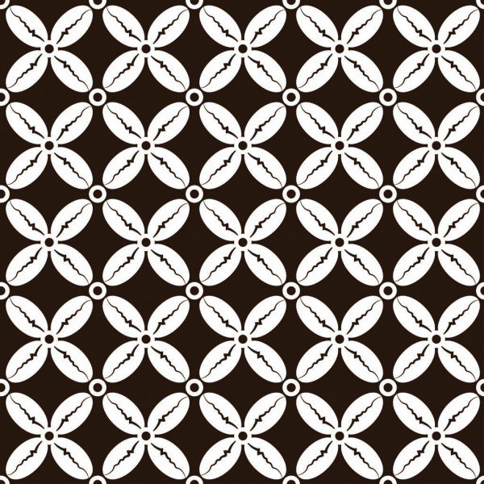
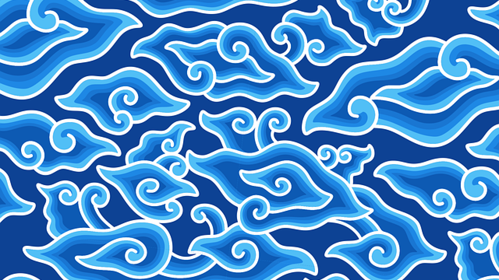
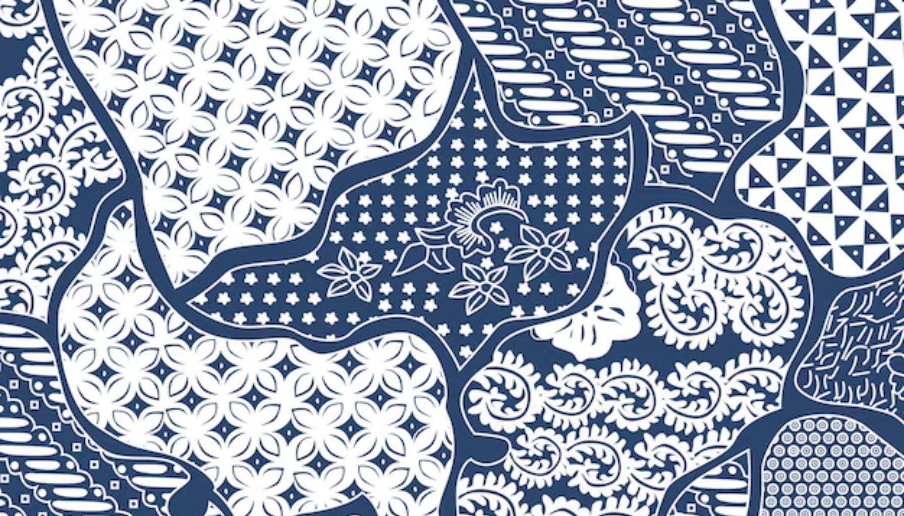
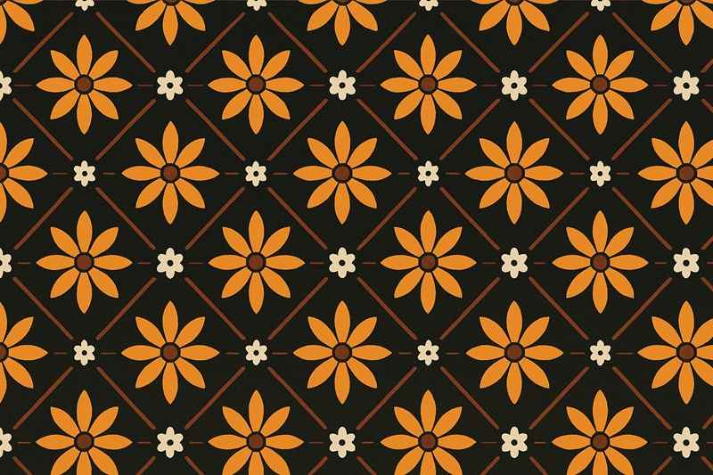

Sejarah Batik Indonesia
Batik telah berkembang sejak zaman dahulu dan menjadi bagian dari kehidupan masyarakat Indonesia. Pada awalnya, batik banyak digunakan dalam lingkungan kerajaan dan memiliki makna tertentu sesuai motifnya.
Seiring berjalannya waktu, batik semakin dikenal oleh masyarakat luas dan berkembang di berbagai daerah. Setiap daerah menghasilkan motif dengan karakteristik yang berbeda.
Pada tanggal 2 Oktober 2009, batik Indonesia diakui oleh UNESCO sebagai Warisan Budaya Takbenda. Oleh karena itu, kita perlu menjaga dan melestarikan batik sebagai bagian dari kebudayaan Indonesia.
Macam-Macam Motif Batik

Batik Parang
Motif berbentuk garis menyerupai ombak yang melambangkan semangat dan pantang menyerah.

Batik Kawung
Motif geometris yang terinspirasi dari buah kawung dan melambangkan kesucian.

Batik Megamendung
Motif awan khas Cirebon yang melambangkan kesabaran dan ketenangan.

Batik Sekar Jagad
Motif yang menggambarkan keindahan dan keberagaman dunia.

Batik Truntum
Motif bunga kecil yang melambangkan cinta dan kasih sayang.
Proses Pembuatan Batik
1. Menggambar Motif
Membuat pola atau motif batik pada kain menggunakan pensil.
2. Mencanting
Menggunakan malam atau lilin untuk mengikuti pola yang sudah dibuat.
3. Pewarnaan
Memberikan warna pada kain sesuai dengan desain yang diinginkan.
4. Pelorodan
Menghilangkan malam dari kain sehingga menghasilkan motif batik.